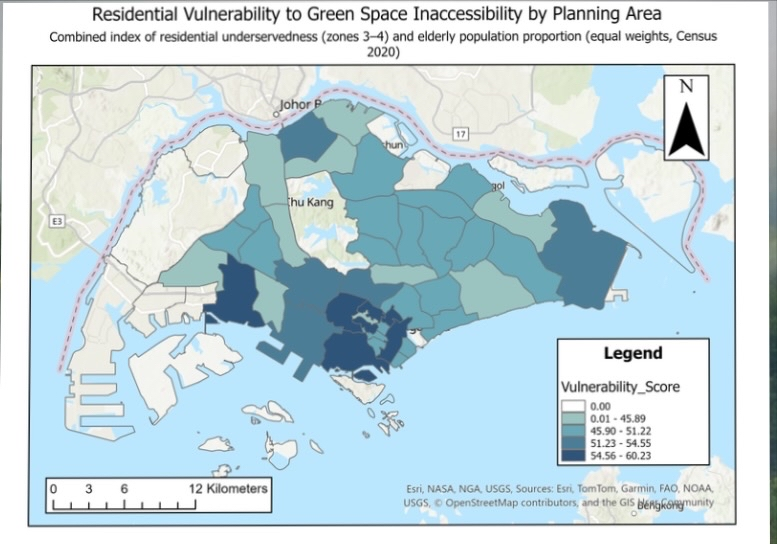
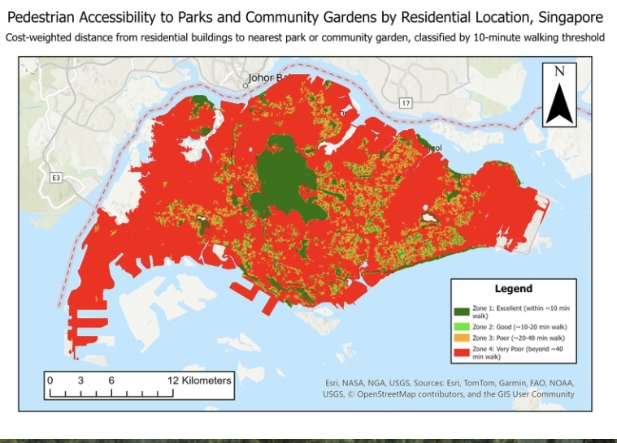
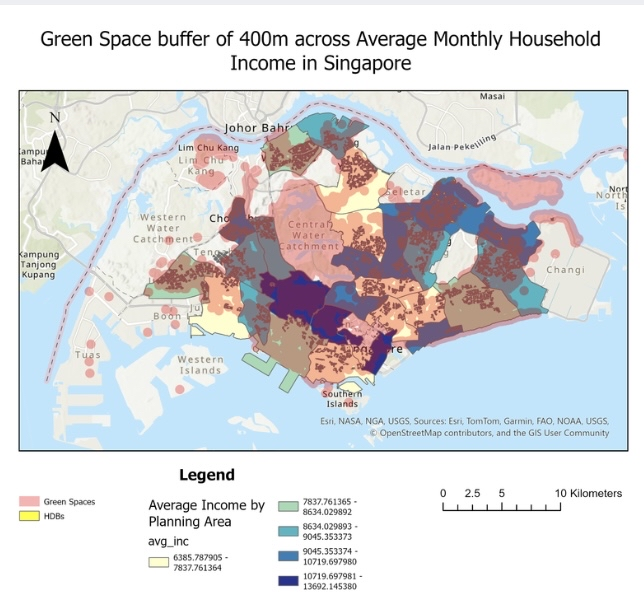
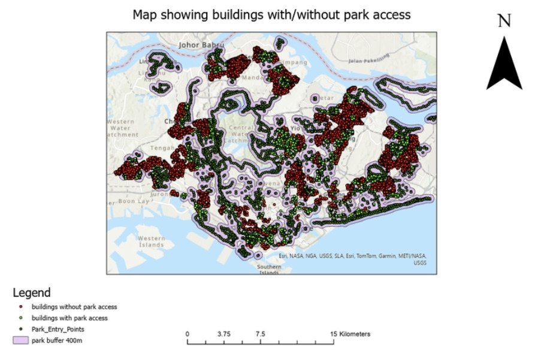
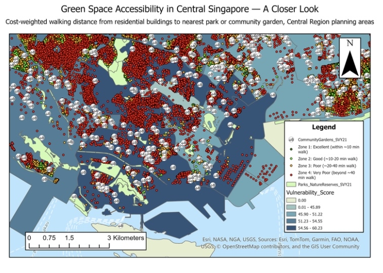

Projects
An investigation into Delhi's air quality crisis using spatial data to trace the origins of pollution to stubble burning practices in the northwest — primarily Punjab and Haryana. The project maps seasonal AQI deterioration and uses spatial analysis to quantify the relationship between agricultural burning locations and pollution levels recorded in Delhi.





Click any thumbnail to enlarge
A spatial equity analysis examining whether parks and green spaces are distributed fairly across Singapore's residential neighbourhoods. Using buffer analysis to define accessibility zones around parks and cost-distance modelling to capture real pedestrian access, the project identifies underserved areas and evaluates the equity implications for urban planning policy.
An upcoming field research project using drone photogrammetry and DroneDeploy to map and assess mangrove forest restoration sites in Sabah, Malaysian Borneo. The project aims to generate high-resolution orthomosaics and elevation models to monitor restoration progress, canopy coverage, and ecosystem recovery — contributing to conservation research led by Prof Gretchen Coffman at NUS.